ChurchillDoc Physics 30 and 30IB Section
What is Physics 30/30IB?
Physics 30 is the final level course of physics. Its prerequisite is Physics 20, and for Physics 30IB, the prerequisite is of course Physics 20IB. Developers' (both of them) note: Neither of us took Physics IB HL, so all IB content that we cover is ONLY what we know from SL. This may change in the future if the site expands.
What's in Physics 30/30IB?
Physics 30 goes over main subjects; momentum, electrostatics, magnetism, electromagnetic radiation (EMR), optics, nuclear physics, and atomic physics.
Physics Principles
You do not need to memorize these but you do need to memorize what these apply to/what they mean.
0: Uniform Motion/Balanced Forces
\(F_{net} = 0\) and there is NO acceleration. Velocity is constant.
1: Accelerated Motion/Unbalanced Forces
\(F_{net} \neq 0\) and there IS acceleration. Velocity is NOT constant.
2: Uniform circular motion/Centripetal Forces
\(F_{net} \neq 0\) and \(F_{net}\) is directed radially inwards.
3: Work-energy Theorem
\(W = \Delta Ek = E_{kf} - E_{kf}\)
4: Conservation of momentum
\(\sum p_i = \sum p_f\)
5: Conservation of energy
\(\sum E_i = \sum E_f\)
6: Conservation of mass-energy
\(E = mc^2\) (do not confuse this with conservation of energy, this is used in nuclear equations)
7: Conservation of charge
\(\sum Q_i = \sum Q_f\)
8: Conservation of nucleons
\(\sum p^+_{reactants} + \sum n_{reactants} = \sum p^+_{products} + \sum n_{products} \)
9: Wave-particle duality
\(\lambda = \frac{h}{p} = \frac{h}{mv}\)
And knowing light can be both wave and particle.
Electrostatics
Electrostatics is
Magnetism
Optics
I don't like optics very much.
Firstly a basic term you need to understand is rectilinear propagation
- Light travels in a straight line in a uniform medium
- It is explained by the ray model, which is that light "rays" propogate from a light source outwards, like a child's drawing of a sun. You know exactly what I'm talking about.
- Light is represented as a straight line with an arrow for direction.
- The ray model works for both wave and particle models of light.
There is a lot of evidence for that light rays travel in a straight line regardless of whether they are wave or particle, but mainly the ones you can remember is that: light can't bend around a corner (you will not see light around a corner as you hear sounds around a corner), light can be blocked by chalk and dust (particles in the air), and the pinhole camera (shown below).
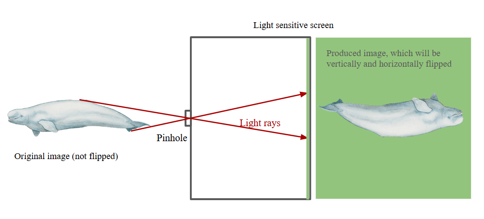
As we can see, the light rays will go through the small hole at the front of the camera and appear inverted. If you kind of...well, think, about it in 3D terms you can visualize the exact same thing, which is that the image will appear inverted on all three axes.
Mirrors
I despise this with a passion~
Here is the vocabulary you need to know (SPECIFICALLY FOR MIRRORS, IT IS DIFFERENT FOR LENSES):
- Real image
- A type of image made from a mirror that appears to be in front of the mirror, or on the same side as the viewer relative to the mirror. In light ray diagrams, the light rays physically intersect at a point in front of the mirror, and the object's image appears there.
- Virtual image
- A type of image made from a mirror that appears to be behind the mirror, or on the opposite side as the viewer relative to the mirror. In light ray diagrams, the light rays do not intersect "physically" but rather merge at a point behind the mirror. Because we know that in reality, the "behind-the-mirror" is probably your closet, the image is hence not "real" because it exists in a space that is unable to allow its existence.
And the sign conventions for ray diagrams, regardless of mirror or lense:
- Objects (not images) are drawn as arrows pointing up.
- Real rays are solid lines.
- Virtual rays are dashed lines.
- Distances are positive for real objects and images and negative for virtual images only.
- Focal points are positive for a converging/concave lense and negative for a diverging/convex lense.
- Heights of objects are positive if the arrow faces up and negative if the arrow faces down.
- All mirrors are assumed to be a part of a perfect circle (like an arc actually it is an arc) although the center of the circle may not necessarily be the focal point.
- Draw rays all originating from the top of the arrow.
A normal mirror reflects the light so that there is no change in dimension or distance (we will get into this later) EXCEPT that they are horizontally inverted. These are also called plane mirrors. NOT PLAIN, plane, because they have no curve.
There is an extremely complex proof of why/how this works called using your eyes and looking in the mirror~
Here is the light ray diagram for a plane mirror:
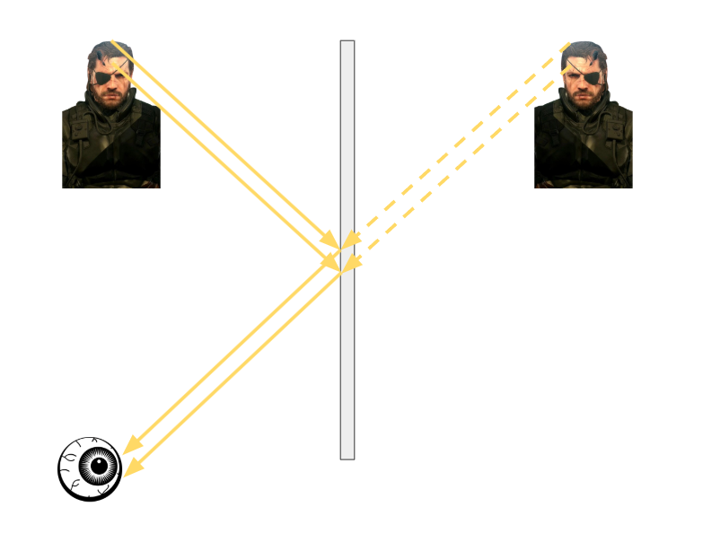
As we can see Big Boss has been horizontally inverted, but his dimensions stay the same, and so does his distance to the mirror.
Concave Mirrors
This is the type of mirror also called a converging mirror. This is because the light rays reflecting off the mirror converge towards a focal point.
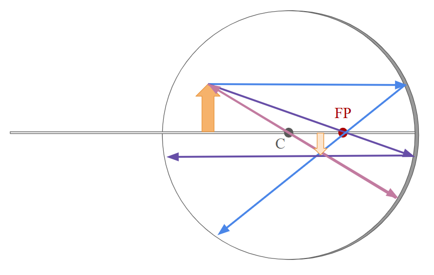
When we draw diagrams for these to find where the image appears, it is where the reflected rays intersect. It is NOT where the solid lines intersect. The above diagram produces a REAL image, because the image appears IN FRONT of the mirror.
When drawing ray diagrams, there will be 3 rays:
- (Blue) Parallel to the surface, and reflecting off the mirror through the focal point, FP.
- (Purple) Through the focal point, and reflecting off the mirror parallel to the surface.
- (Pink) Through the center and straight back through the center.
Where ALL of the reflected rays intersect is where the image appears (the word ALL is necessary as we will see later). Because we have all of our rays coming from the top of the arrow, that is where the top of the arrow goes. We also know that it will be upside down, because our object isn't floating...
A case where no image is produced is when the object is ON the focal point:
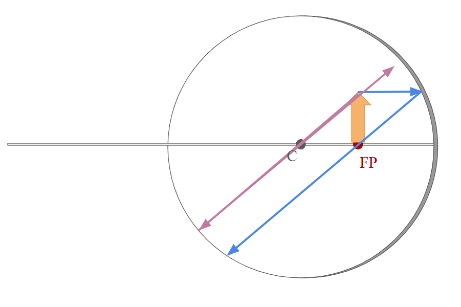
As we can see, there are two issues. We cannot draw the ray that goes through the focal point and then is reflected back parallel to the surface (which would've been purple colored). And we also see that the two reflected rays do no converge and instead travel parallel to each other. Therefore, no image is produced. This is always true for objects on the focal point of a concave mirror.
Convex Mirrors
Conventions stay the same BUT convex or diverging mirrors can only create virtual images.
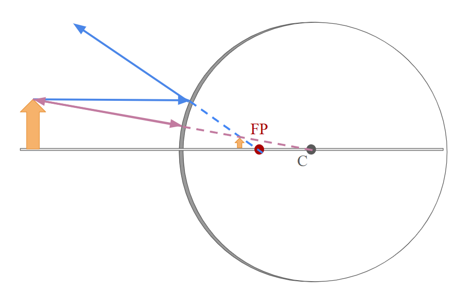
Because the produced image appears behind the mirror, it is a virtual image. As well, note that the intersecting rays that produce the image are dashed; this is because the lines themselves appear behind the mirror and so are also virtual.
For convex mirrors you do not need the purple ray that goes through the focal point as you do in a concave mirror. You only need the one that goes parallel (blue) and the one that goes through the center (pink).
The following will always be true for a convex mirror's image:
- The image will always be smaller.
- The image will always face upwards.
- The image will always be between the focal point and the edge of the mirror.
- The image will always be virtual.
- The image will always be produced, or that there is no case where there are parallel rays as in a concave mirror.
Refraction
This is something to know before lenses. Refraction is the bending of light when it enters a new medium. Not that it does not travel in a straight line anymore, but rather that its direction, speed, and wavelength changes (NOT THE FREQUENCY).
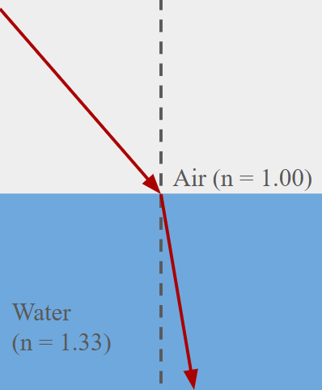
The dashed line is the normal line and the red arrows are a light ray (the same ray, but in different mediums)
Refraction explains why when you're trying to catch a fish with your bare hands (for some reason I don't know your hands I guess) and you try to get the fish at the exact point that you see it with your eyes above the water, you won't get it. Because the light is "changing directions" where you percieve the fish to be is not actually where the fish is.
A mnemonic to help you remember HOW the light behaves as it enters a new medium is:
F A S T
Fast, Away, Slow, Towards
This is to say that as light enters a medium where it moves fast relative to the previous medium, it will bend away from the normal. As it enters a medium where it moves slow relative to the previous medium, it will bend towards the normal.
Don't you love mnemonics so much man I really like opticsit'soneofmyfavoriteunitsofalltimewowopticsyayasdhlkfjahsd
Lenses
Arguably worse than mirrors.
There are some things that are different for the definitions of words bewteen lenses and mirrors, being:
- A real image is an image that appears behind, or AFTER the lense. This is because the lense is transparent and logically light will travel through.
- A virtual image is an image that appears in front of the lense, or BEFORE the lense. This is because the lense is transparent and logically light will travel through. So really, the image is existing in a space where it kind of shouldn't...
All conventions remain the same. For physics 30 all convex lenses are assumed to be double convex lenses, meaning that they are convex on both sides of the lense (like an oval).
Convex Lenses
There are two cases for a convex lense that will make the image either not appear or be virtual.
When it is on the focal point:
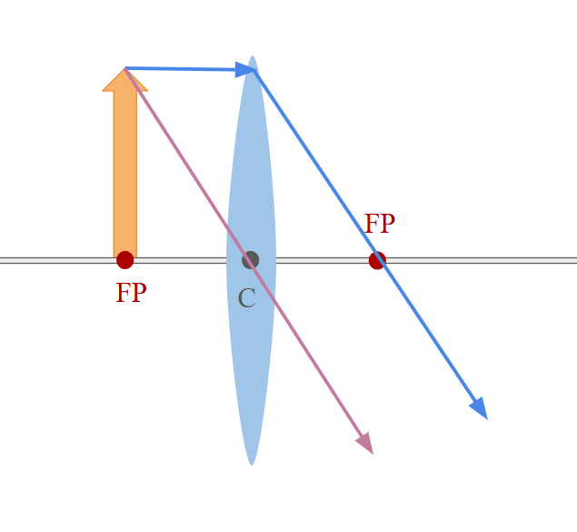
As we can see, just like with our concave mirror, there are parallel lines and hence no image is produced.
When it is between the focal point and the lense:
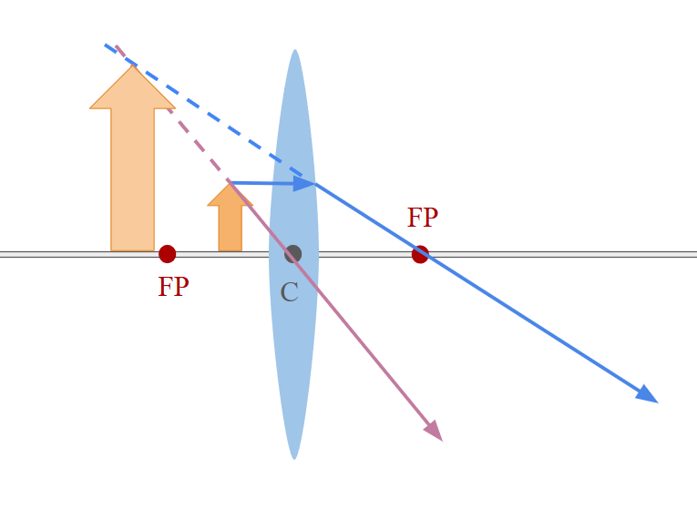
As we can see, the rays diverge after passing through the lense. However, if we "extrapolate" the real rays we can create a virtual image. This virtual image will always be larger than the object.
Other than these two cases, all other positions of the object will result in an image that is real and inverted.
Concave Lenses
Concave lenses have NO special cases; they will always appear in a manner as follows:
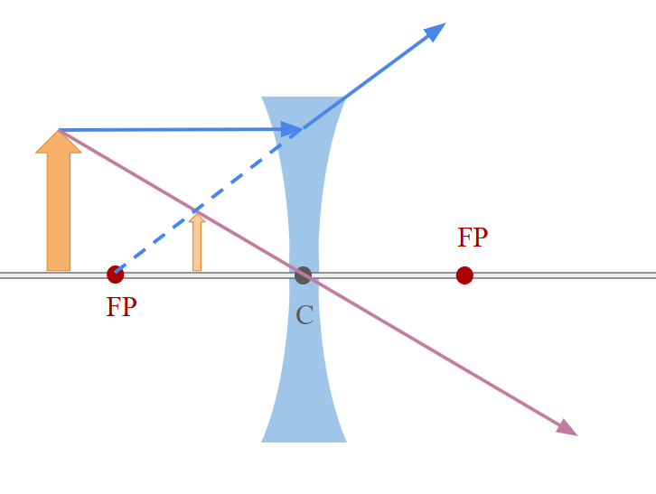
The following will always be true for a concave lense's image:
- The image will always be smaller.
- The image will always face upwards.
- The image will always be between the focal point and the edge of the mirror.
- The image will always be virtual.
- The image will always be produced, or that there is no case where there are parallel rays as in a concave mirror.
And that is all. Flourish and exeunt.
Electromagnetic radiation (EMR)
Some things in optics also appears in EMR, like refraction.
Starting off, you should probably know that white light is the combination of all colors. Color also refers to a certain frequency or wavelength of light, whether it is in the visible spectrum or not.
Speaking of the visible spectrum, the wavelength that we can see is from 410 nm (violet) to 660 nm (red).
And speaking of the spectrum, I might as well give this to you right now.
EMR Spectrum by Wavelength
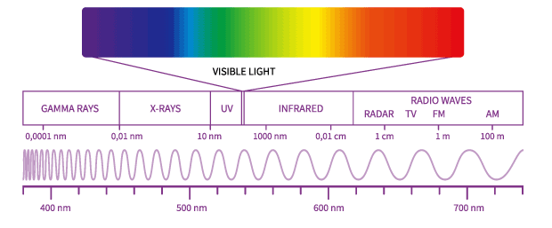
Developer's note: I myself found it easier for some reason to just remember the wavelengths. As we will see later frequency and wavelength are inverses of each other.
Another developer's note: The spectrum is NOT given on the formula sheet and it is COMPLETELY REASONABLE ALBEIT SOMEWHAT EVIL for a question to show up on your diploma that expects you to know, at the very least, the correct order of the waves.
Diffraction
Diffraction is the propogation of light after hitting an obstacle. For this in particular we will be looking at slit experiments, in particular, the double slit experiment.
But first:
Hyugens' Principle
The motion of one wavefront is similar to an infinite number of smaller, secondary propogating sources of smaller waves that are on an infinite number of points of the primary wavefront.
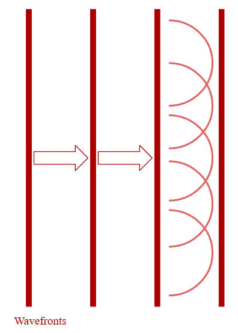
You can visualize it as that as the primary wavefront, in dark red, moves forward, there are tiny little secondary wavefronts propogating from every point of the primary wavefront travelling at the same speed WITH the primary wavefront. Hyugens' Principle is important because it helps us visualize diffraction later on. Interference patterns between the secondary wavefronts cause the wavefront to still be a straight line, even though it is made up of an infinite amount of circular, outwards-propogating, waves. This also applies for primary wavefronts that are circular.
Young's Double Slit Experiment
The experiment essentially showed that light could be a wave because it exhibits interference, which is a property of waves and not particles. The experiment looks like as follows:
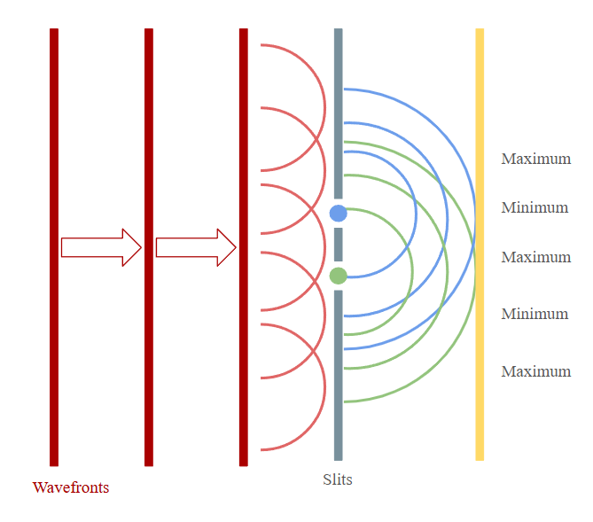
Going back to Hyugens' Principle, we can think of the slits as "filtering" out the mini secondary wavefronts, so that only one gets through per slit (ideally). This then causes an interference pattern between the waves propogating from the slits. The light sensitive screen at the end then picks up maximum bright spots and minimum dark spots as a result of the interference pattern. This is something that is not possible with the particle model of light.
The equation that you will use is:
\[\boxed{\lambda = \frac{dx}{nL}}\]
Where:
- \(\lambda = \) wavelength
- \(d = \) separation between the two slits
- \(x = \) distance from the center bright fringe to the node or antinode you are trying to solve for
- \(n = \) the number of the order of the node or antinode. (1 for first order maximum, \(\frac{1}{2}\) for first order minimum, and so on
- \(L = \) distance from the slits to the light sensitive screen
You will always assume the slits are small enough to diffract the light properly.
Polarization
Polarization demonstrated the transverse wave nature (as opposed to longitudinal) of light. Polarization essentially is two "filters," one vertical and one horizontal. These block out certain EMR waves. If we imagine an EMR wave as two waves oscillating in two directions but still moving forward (so one oscillates up and down and the other left and right) then one polarization filter will block out one of those directions and reduce the intensity of the overall wave. A second filter right after that, perpendicular to the first filter, will filter out the remaning direction of the EMR wave, and completely block out the EMR.
Two polarization filters filtering in the same direction will achieve the same effect as only one in the same direction.
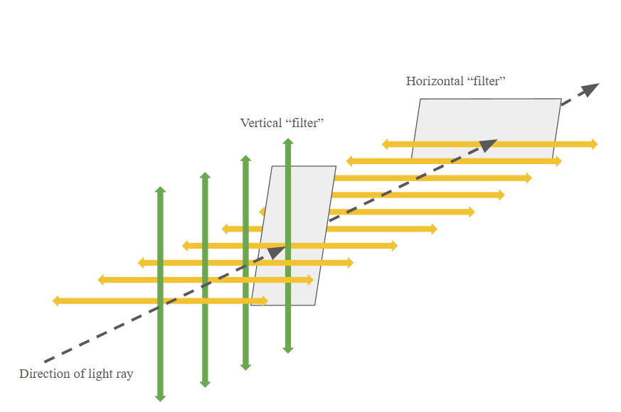
In this example, the green arrow represents the wave oscillating up and down, and the yellow the one left to right. Both are perpendicular to each other and the direction of the light. At the end, there is no light because all of it has been polarized.
Because light could be polarized it meant that it was a transverse wave.
What wasn't understood at the time though was that light doesn't need a medium to travel through, and up until Maxwell found a mathematical relationship between light and electric and magnetic fields (and then later Einstein showed that the speed of light was constant for all observers no matter your relative motion), it wasthought to have travelled through a medium called "aether."
Where my COD Zombies fans at.
Maxwell found that:
The electric and magnetic fields at any point on the EMR wave are perpendicular to each other and their direction of travel.
The fields alternate in direction, meaning that the maximum of the wave varies in direction as it travels. The two fields are in phase, producing their maximums and zeros at the same points.
This then made the conclusion that:
\[\boxed{\text{Electromagnetic fields, waves, and radiation are produced by oscillating currents or accelerating electric charges.}}\]
The particle cannot be neutral (no neutrons) and it MUST be accelerating (cannot be constant velocity).
Developer's note: I can almost guarantee that that will come up on the diploma.
That conclusion also explains why light does not need a medium to travel through like other waves. It does not require physical atoms to propogate its energy through, because it is made up of electromagnetic fields that continously perpetuate each other into creation. A fluctuating electric field causes a magnetic field. A fluctuating magnetic field causes an electric field. In this way, the wave "creates" itself into moving forwards. We will see later in atomic physics that light is made up of...particles rather than waves too.
Atomic Physics
Highly advised to read in order as written
Some things that aren't necessarily long enough to explain but you should still probably know:
- The cathode ray tube experiment confirmed the existence of the electron by observing its deflection under different electric and magnetic fields.
- Light cannot be deflected by electric fields nor magnetic fields.
- Millikan discovered the elementary charge of an electron with his oil drop experiment, and found that all observed charges where integral multiples of the elementary charge.
- Millikan was also sexist.
- Millikan also cooked his data.
Blackbody Radiation
A blackbody is an idealized object that absorbs all of the energy given to it. This means that if it does emit light, or a color that isn't black, it comes from the blackbody heating up, because otherwise it would mean that is able to reflect certain wavelengths of light to produce that color. A blackbody would also be an ideal radiator/emitter if it was heated, though not all emitted frequencies would have the same intensity.
A star is an example of a blackbody. (This is important later in astrophysics, which is an IB subject, so if you're a normal and sane person ignore this.)
Another thing to know is that energy is quantized into packets, with the "quantum" level being the smallest packet being able to be absorbed by matter, specifically atoms. We will see this later.
Developer's note: As an anecdote while looking through my own notes I somehow managed to have thermodynamics (IB subject) in atomic physics...what am I doing.
Photoelectric Effect
First off you will need this equation:
\[\boxed{E = nhf = \frac{nhc}{\lambda}}\]
The effect is essentially: high energy light beam hits metal in evacuated tube, knocks off electrons with excess energy, electrons move, and create current.
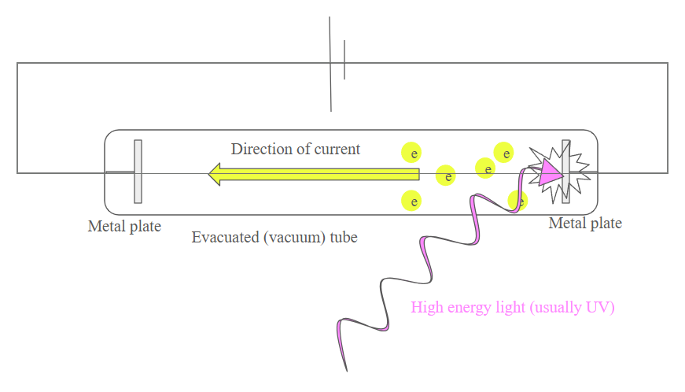
The electrons are called photoelectrons in this specific experiment.
The energy from the EMR excites the electrons in the metal plate and knocks them off, which leaves free electrons and because of the terminals at the top of the circuit, they will move to the positive terminal and thus create a current and potential difference
This experiment has differences between classical and modern physics.
Classical physics predicted that:
- Higher intensity light waves would deliver more energy and hence eject electrons with more kinetic energy.
- Any frequency of light would be able to eject electrons after some time as long as the intensity was high enough to build up enough energy.
- Low intensity light would cause a delay in the time it took to eject an electron because it needed to build up energy continously.
Modern physics states that:
- Intensity only affects the amount of electrons ejected, not the speed that they are ejected at, or if they are ejected at all.
- Frequency is what determines the kinetic energy of the ejected electrons and whether or not electrons are ejected at all.
- There is no delay in electron ejection as long as the frequency is high enough; the intensity of light does not affect the time it takes.
The reason for all of this is because of something called the threshold frequency, which is different for the material of the tube.
Threshold Frequency
The minimum frequency of light required to eject electrons from a certain material. Threshold frequency is denoted as \(f_0\)
Because we know that:
\[E = hf = \frac{hc}{\lambda}\]
We know that the energy is directly proportional to the frequency. That is, as \(f_0\) increases, so does the minimum energy required.
To find all the components in the experiment, we use:
\[\boxed{W = hf = E = hf_0 + E_{kmax}}\]
Keep in mind that \(f \neq f_0\); \(f\) is the frequency of the incident light.
\[\boxed{\text{The physics principle is the conservation of energy (5)}}\]
The Compton Effect
Arguably the most confusing thing in atomic physics but that might just be me.
The Compton Effect is the phenomenon in which an X-ray (a very high energy EMR wave) hits an electron and is scattered with a lower frequency than the incident wave.
This meant that the scattered EMR had a lower energy than before, and that meant the electron had kinetic energy.
If the electron had kinetic energy, it had a velocity, and hence momentum because it has a mass.
If momentum is conserved, that that means that the light also had momentum.
We know that light has speed, but then that means light has mass.
And that was basically Compton's finding. That light has momentum (later they found out it doesn't have mass but has momentum regardless). This along, with the photoelectric effect, proved that light could also exist as a particle.
These particles of light are called photons.
Compton found a relationship between the change in wavelength and the angle of the scattered X-ray photon. The scattering of the X-ray is called Compton Scattering and the change in the energy of the scattered photon is called the Compton Effect. Compton found a mathematical relation, being:
\[\boxed{\lambda ^{'} = \lambda + \frac{h}{m_ec}(1-cos\theta)}\]
\[\frac{h}{m_ec} = \text{Compton Wavelength} = 2.43 x 10^-12m\]
\[\text{The physics principle is wave-particle duality (9)}\]
De Broglie Wavelength
I lied the last time I think this one's more confusing because his proof was "I used my brain."
De Broglie theorized something called matter waves, outlining that particles can exhibit wave-like properties, because if waves could exhibit particle-like properties then the opposite should be possible as well.
And I swear he said, and I quote:
"Nature loves symmetry."
Okay.
De Broglie found that